Comunidad
Construimos vínculos y fortalecemos la convivencia.
Educamos en comunidad, construimos futuro, acompañamos trayectorias y fortalecemos la identidad de Estación Yuquerí.
La Escuela Secundaria N.º 31 “Benito Juárez” es memoria, comunidad y futuro: una institución que crece junto a Estación Yuquerí, sosteniendo el derecho a aprender, encontrarse y proyectar nuevos caminos.
Construimos vínculos y fortalecemos la convivencia.
Acompañamos el aprendizaje y las trayectorias.
Trabajamos cada día por una escuela inclusiva y humana.
Formamos jóvenes para transformar su presente y su entorno.
Ingreso directo a las principales secciones del sitio institucional.
Identidad, datos escolares y organización institucional.
Memoria escolar, 25 años y video histórico institucional.
Avisos, actividades, fechas escolares y comunicaciones importantes.
Documentos, formularios, normativa y enlaces útiles.
Proyectos institucionales, ABP, territorio y tecnología educativa.
Videos, fotografías, producciones sonoras y memoria escolar.
Canales oficiales de comunicación institucional.
La Escuela Secundaria N.º 31 “Benito Juárez” constituye un espacio educativo de referencia para Estación Yuquerí y su comunidad.
La Escuela Secundaria N.º 31 “Benito Juárez” construye su identidad desde la cercanía con las familias, la historia de la comunidad y el compromiso cotidiano con las trayectorias de sus estudiantes.
A lo largo de su recorrido, la institución se consolidó como un espacio de encuentro, pertenencia y acompañamiento, donde docentes, preceptores, equipos de orientación, estudiantes y actores institucionales participan en la construcción de una escuela abierta a la comunidad.
Esta identidad se fortalece en el trabajo colectivo, la presencia territorial y la convicción de que educar también implica escuchar, contener, orientar y construir oportunidades compartidas.
Nombre: Escuela Secundaria N.º 31 “Benito Juárez”.
CUE: 3002566.
Ubicación: Ruta Provincial 22 y vías del ferrocarril, Estación Yuquerí, Concordia, Entre Ríos.
Sector: Estatal.
Ámbito: Rural.
Nivel: Educación secundaria común.
La Escuela Secundaria N.º 31 “Benito Juárez”, ubicada en Estación Yuquerí, Concordia, Entre Ríos, forma parte de la historia viva de su comunidad. Desde fines de la década de 1990 y comienzos de los años 2000, la institución nació como respuesta a la necesidad de garantizar oportunidades educativas para los jóvenes de la zona, sosteniendo el derecho a la educación secundaria en un contexto rural y territorialmente complejo.
A lo largo de su recorrido, la escuela creció junto a las familias, construyendo una identidad basada en la cercanía, el compromiso comunitario y el acompañamiento de las trayectorias estudiantiles. Su historia se encuentra vinculada al esfuerzo colectivo de docentes, estudiantes, directivos, preceptores, familias y actores institucionales.
Hoy, luego de más de 25 años de trayectoria, la Escuela Secundaria N.º 31 continúa fortaleciendo proyectos institucionales, propuestas pedagógicas, acompañamiento territorial y procesos de innovación educativa.
La creación de la escuela representó un paso fundamental para garantizar el acceso a la educación secundaria en Estación Yuquerí y zonas cercanas. En sus comienzos, la institución funcionó en condiciones limitadas, atravesando desafíos vinculados al contexto rural, las distancias y la necesidad de consolidar recursos materiales y humanos.
El acompañamiento de la comunidad permitió que la escuela creciera progresivamente y se transformara en un espacio de referencia para generaciones de estudiantes y familias.
La Escuela Secundaria N.º 31 se consolidó como un espacio de encuentro, pertenencia y construcción colectiva. Su identidad se construye diariamente a partir del vínculo cercano con las familias, el acompañamiento de las trayectorias escolares y la participación activa de la comunidad educativa.
En el año 2025, la institución celebró sus 25 años de trayectoria educativa, reafirmando su compromiso con la educación pública, la comunidad y las nuevas generaciones.
En un contexto donde las distancias forman parte de la vida cotidiana, garantizar el acceso y permanencia escolar constituye una tarea fundamental. La institución acompaña activamente las trayectorias educativas y fortalece el derecho a la educación.
La institución cuenta con antecedentes de organización digital mediante espacios virtuales destinados a compartir materiales, actividades y comunicaciones con estudiantes y familias.
Producción audiovisual realizada en el marco de los 25 años de la Escuela Secundaria N.º 31 “Benito Juárez”.
La Escuela Secundaria N.º 31 “Benito Juárez” sostiene su organización institucional desde el trabajo articulado entre conducción, gestión administrativa, asesoramiento pedagógico, preceptoría, tutorías y acompañamiento tecnológico-pedagógico, fortaleciendo las trayectorias educativas y el vínculo con la comunidad de Estación Yuquerí.
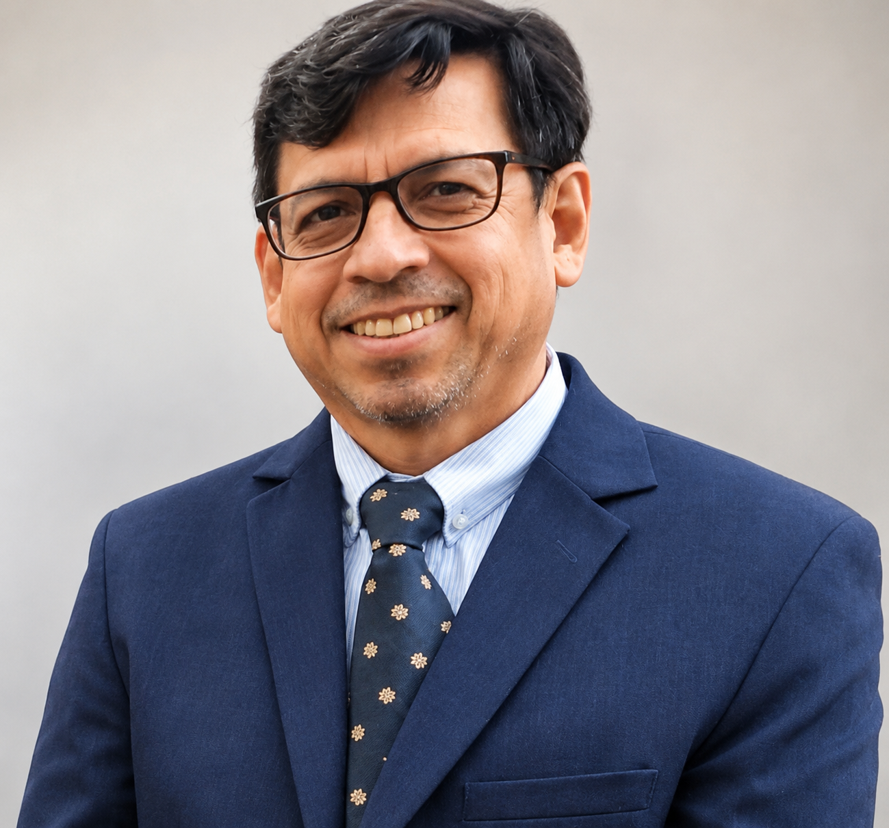
Responsable de la conducción general de la institución, organización escolar, articulación pedagógica y representación institucional.
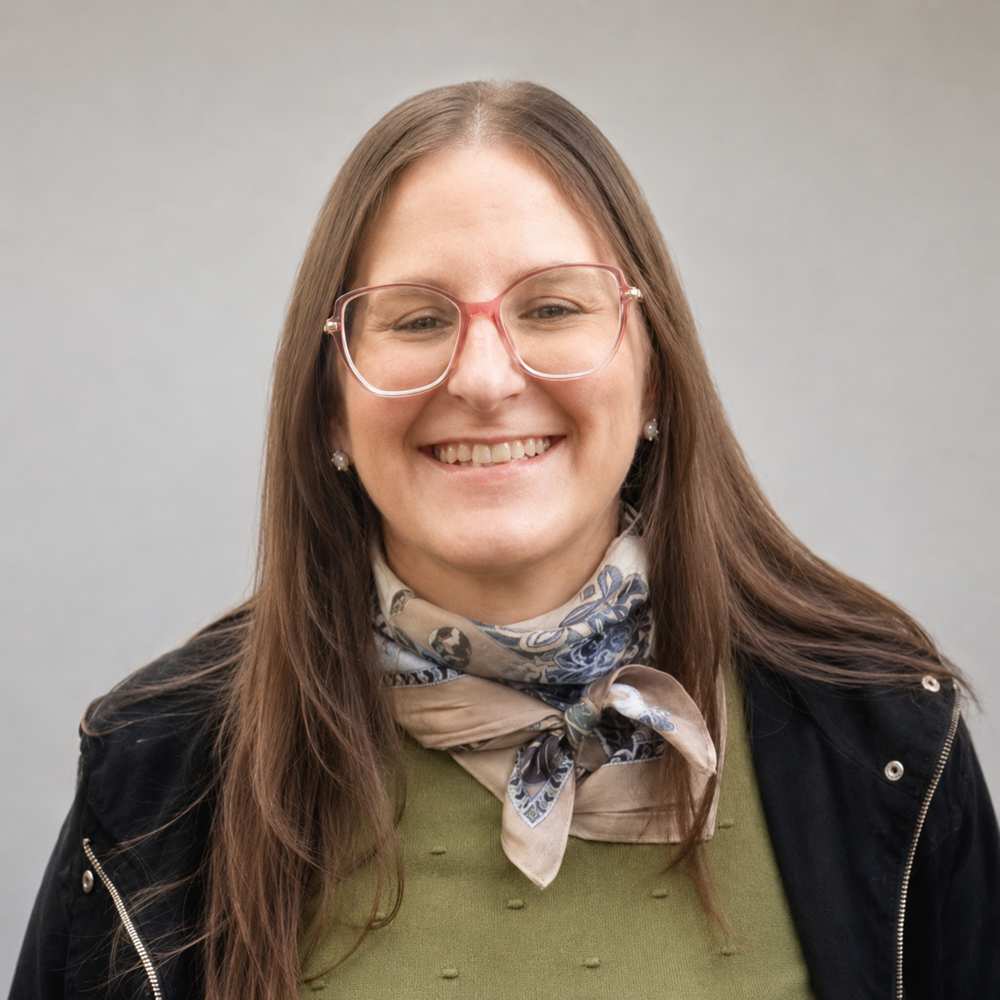
Organización administrativa, documentación institucional, certificaciones, comunicaciones y seguimiento de registros escolares.
Acompañamiento pedagógico institucional y seguimiento de trayectorias educativas.
Seguimiento de asistencia, convivencia escolar, comunicación con familias y organización institucional cotidiana.
Acompañamiento pedagógico-digital, alfabetización digital situada, integración tecnológica, producción de recursos institucionales y desarrollo de proyectos ABP y gamificación.
Comunicados recientes, actos, recordatorios y actividades de la vida escolar.

Entrega de planillas de calificaciones por parte de los preceptores, finalización del primer trimestre, carga de notas en SAGE e inicio del segundo trimestre.

Entrega de planillas de calificaciones a docentes, fecha tope para recibir las planillas, control de carga de notas y actualización de asistencia en LUA SAGE.

Invitación a la comunidad educativa para acompañar a nuestros estudiantes en el acto patrio.
Espacio de acceso directo a recursos reales de gestión, acompañamiento y comunicación. La información se organiza por destinatarios para facilitar el uso cotidiano del sitio.
Acceso organizado a documentación institucional de uso docente, horarios, salidas educativas y recursos pedagógico-digitales. Los enlaces se presentan sin mostrar direcciones extensas para mantener una navegación clara desde celular y computadora.
Espacios institucionales que fortalecen la memoria, la participación comunitaria, las trayectorias educativas y la integración de propuestas pedagógicas innovadoras.
“Tesoros ocultos de la escuela” nace como una propuesta destinada a recuperar memorias, experiencias, relatos y huellas que forman parte de la identidad institucional de la Escuela Secundaria N.º 31 “Benito Juárez”.
A través de entrevistas, investigaciones, producciones digitales, registros históricos y actividades comunitarias, estudiantes y docentes reconstruyen colectivamente la historia viva de la institución y de Estación Yuquerí.
El proyecto fortalece el sentido de pertenencia, la participación estudiantil, el vínculo con las familias y la valoración de la escuela como espacio de encuentro, memoria y construcción comunitaria.
Recuperación de relatos, fotografías, experiencias y acontecimientos significativos de la vida institucional.
Los estudiantes se convierten en protagonistas, investigadores y narradores de la historia de su escuela y comunidad.
El proyecto fortalece vínculos con familias, ex estudiantes, vecinos y actores históricos de Estación Yuquerí.
Galerías, entrevistas, videos, relatos y materiales digitales construidos colectivamente durante el proyecto.
“Cuidar el cuerpo, cuidar la vida”
Proyecto institucional destinado a estudiantes de la Escuela Secundaria N.º 31 y a la comunidad barrial de Estación Yuquerí. Articula escuela, Centro de Salud de Estación Yuquerí y referentes barriales para promover cuidado del cuerpo, salud integral y vínculos saludables.
La propuesta aborda salud bucal, enfermedades de transmisión sexual, embarazo no intencional en la adolescencia, vínculos sanos, convivencia escolar, asistencia, compromiso y responsabilidad en la trayectoria educativa.
Los estudiantes producen folletos y materiales informativos, trabajan lectura comprensiva, producción escrita, síntesis de información y comunicación de mensajes preventivos para la comunidad.


Programa institucional orientado al fortalecimiento de capacidades digitales, integración tecnológica y acompañamiento pedagógico en contextos educativos situados.
La propuesta promueve el desarrollo de competencias vinculadas al uso crítico, responsable y significativo de las tecnologías digitales, favoreciendo la inclusión, la ciudadanía digital y el acceso a nuevas formas de aprender y comunicarse.
Desde una mirada contextualizada y cercana a la realidad institucional, el programa acompaña trayectorias educativas mediante herramientas digitales, recursos tecnológicos y prácticas pedagógicas que fortalecen la continuidad educativa y la participación activa de los estudiantes.
Documento institucional con fundamentos, objetivos y líneas de acción vinculadas a la integración tecnológica.
Descargar programa institucional en PDF →Espacio destinado a compartir fotografías, videos, producciones estudiantiles, canciones institucionales, entrevistas y registros que reflejan la vida cotidiana de la Escuela Secundaria N.º 31 “Benito Juárez”.
Imágenes que recuperan actos, encuentros, jornadas, proyectos, participación estudiantil, celebraciones y experiencias compartidas por la comunidad educativa de Estación Yuquerí.
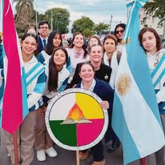
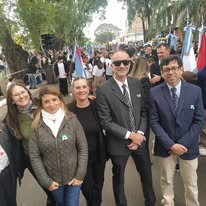
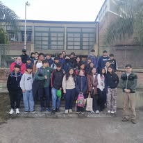
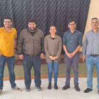
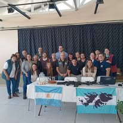
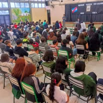
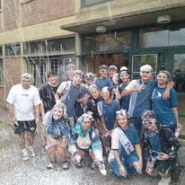
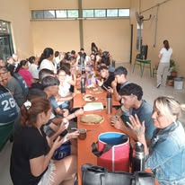
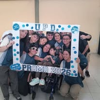
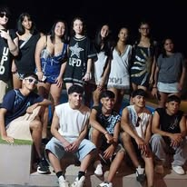
Registros audiovisuales de actividades, actos, proyectos escolares, entrevistas, producciones estudiantiles y memoria institucional.
Ver video histórico 25 años →La Escuela Secundaria N.º 31 “Benito Juárez” también construye su identidad a través de producciones musicales y sonoras que recuperan la memoria, la historia y el sentido de pertenencia de Estación Yuquerí.
Composición original creada para la escuela y presentada en el marco de los 25 años institucionales.
Ver letra del himno →Canción realizada especialmente para el video oficial del acto aniversario de los 25 años de la institución.
Producción musical vinculada a la identidad, la memoria y las voces de la comunidad educativa.
Todas las producciones musicales y composiciones fueron realizadas por Alfredo Esquivel como parte del trabajo institucional, cultural y pedagógico desarrollado junto a la comunidad educativa.
Canales oficiales para comunicarse con la Escuela Secundaria N.º 31 “Benito Juárez”, realizar consultas, seguir novedades y acompañar la vida escolar.
Ruta Provincial 22 y vías del ferrocarril — Estación Yuquerí, Concordia, Entre Ríos.
Seguimiento de actividades institucionales, proyectos, comunicados, imágenes y vida escolar.
Facebook institucional →